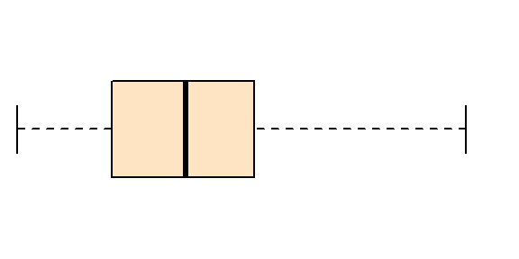
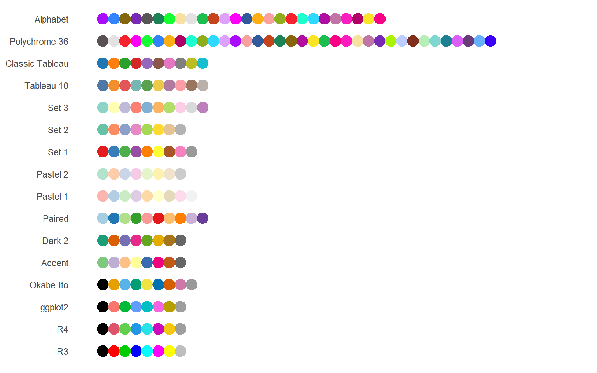
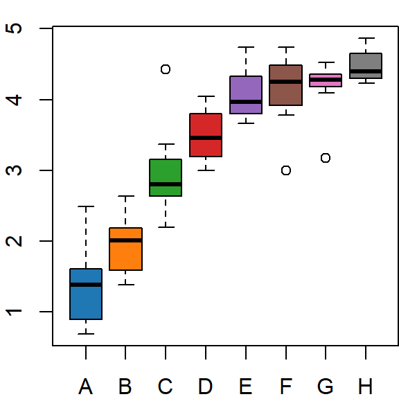
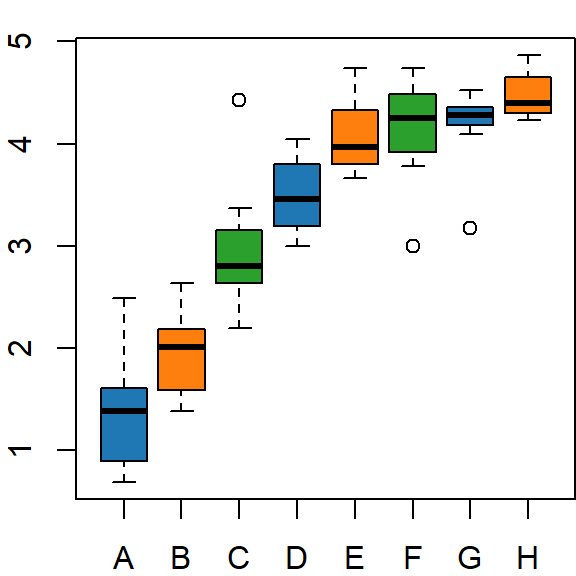
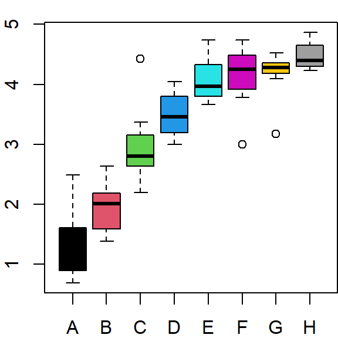

Customizing colors in R
| version | |
|---|---|
| R | 4.1.2 |
R has a large number of built-in colors that can be accessed by their names–657 as of this writing . But many of these color names share the same RGB colors thus reducing the set of unique colors to 502.
To see the list of distinct colors type:
colors(distinct = TRUE) [1] "white" "aliceblue" "antiquewhite" "antiquewhite1"
[5] "antiquewhite2" "antiquewhite3" "antiquewhite4" "aquamarine"
[9] "aquamarine2" "aquamarine3" "aquamarine4" "azure"
[13] "azure2" "azure3" "azure4" "beige"
[17] "bisque" "bisque2" "bisque3" "bisque4"
[21] "black" "blanchedalmond" "blue" "blue2"
[25] "blue3" "blue4" "blueviolet" "brown"
[29] "brown1" "brown2" "brown3" "brown4"
[33] "burlywood" "burlywood1" "burlywood2" "burlywood3"
[37] "burlywood4" "cadetblue" "cadetblue1" "cadetblue2"
[41] "cadetblue3" "cadetblue4" "chartreuse" "chartreuse2"
[45] "chartreuse3" "chartreuse4" "chocolate" "chocolate1"
[49] "chocolate2" "chocolate3" "chocolate4" "coral"
[53] "coral1" "coral2" "coral3" "coral4"
[57] "cornflowerblue" "cornsilk" "cornsilk2" "cornsilk3"
[61] "cornsilk4" "cyan" "cyan2" "cyan3"
[65] "cyan4" "darkgoldenrod" "darkgoldenrod1" "darkgoldenrod2"
[69] "darkgoldenrod3" "darkgoldenrod4" "darkgray" "darkgreen"
[73] "darkkhaki" "darkmagenta" "darkolivegreen" "darkolivegreen1"
[77] "darkolivegreen2" "darkolivegreen3" "darkolivegreen4" "darkorange"
[81] "darkorange1" "darkorange2" "darkorange3" "darkorange4"
[85] "darkorchid" "darkorchid1" "darkorchid2" "darkorchid3"
[89] "darkorchid4" "darkred" "darksalmon" "darkseagreen"
[93] "darkseagreen1" "darkseagreen2" "darkseagreen3" "darkseagreen4"
[97] "darkslateblue" "darkslategray" "darkslategray1" "darkslategray2"
[101] "darkslategray3" "darkslategray4" "darkturquoise" "darkviolet"
[105] "deeppink" "deeppink2" "deeppink3" "deeppink4"
[109] "deepskyblue" "deepskyblue2" "deepskyblue3" "deepskyblue4"
[113] "dimgray" "dodgerblue" "dodgerblue2" "dodgerblue3"
[117] "dodgerblue4" "firebrick" "firebrick1" "firebrick2"
[121] "firebrick3" "firebrick4" "floralwhite" "forestgreen"
[125] "gainsboro" "ghostwhite" "gold" "gold2"
[129] "gold3" "gold4" "goldenrod" "goldenrod1"
[133] "goldenrod2" "goldenrod3" "goldenrod4" "gray"
[137] "gray1" "gray2" "gray3" "gray4"
[141] "gray5" "gray6" "gray7" "gray8"
[145] "gray9" "gray10" "gray11" "gray12"
[149] "gray13" "gray14" "gray15" "gray16"
[153] "gray17" "gray18" "gray19" "gray20"
[157] "gray21" "gray22" "gray23" "gray24"
[161] "gray25" "gray26" "gray27" "gray28"
[165] "gray29" "gray30" "gray31" "gray32"
[169] "gray33" "gray34" "gray35" "gray36"
[173] "gray37" "gray38" "gray39" "gray40"
[177] "gray42" "gray43" "gray44" "gray45"
[181] "gray46" "gray47" "gray48" "gray49"
[185] "gray50" "gray51" "gray52" "gray53"
[189] "gray54" "gray55" "gray56" "gray57"
[193] "gray58" "gray59" "gray60" "gray61"
[197] "gray62" "gray63" "gray64" "gray65"
[201] "gray66" "gray67" "gray68" "gray69"
[205] "gray70" "gray71" "gray72" "gray73"
[209] "gray74" "gray75" "gray76" "gray77"
[213] "gray78" "gray79" "gray80" "gray81"
[217] "gray82" "gray83" "gray84" "gray85"
[221] "gray86" "gray87" "gray88" "gray89"
[225] "gray90" "gray91" "gray92" "gray93"
[229] "gray94" "gray95" "gray96" "gray97"
[233] "gray98" "gray99" "green" "green2"
[237] "green3" "green4" "greenyellow" "honeydew"
[241] "honeydew2" "honeydew3" "honeydew4" "hotpink"
[245] "hotpink1" "hotpink2" "hotpink3" "hotpink4"
[249] "indianred" "indianred1" "indianred2" "indianred3"
[253] "indianred4" "ivory" "ivory2" "ivory3"
[257] "ivory4" "khaki" "khaki1" "khaki2"
[261] "khaki3" "khaki4" "lavender" "lavenderblush"
[265] "lavenderblush2" "lavenderblush3" "lavenderblush4" "lawngreen"
[269] "lemonchiffon" "lemonchiffon2" "lemonchiffon3" "lemonchiffon4"
[273] "lightblue" "lightblue1" "lightblue2" "lightblue3"
[277] "lightblue4" "lightcoral" "lightcyan" "lightcyan2"
[281] "lightcyan3" "lightcyan4" "lightgoldenrod" "lightgoldenrod1"
[285] "lightgoldenrod2" "lightgoldenrod3" "lightgoldenrod4" "lightgoldenrodyellow"
[289] "lightgray" "lightgreen" "lightpink" "lightpink1"
[293] "lightpink2" "lightpink3" "lightpink4" "lightsalmon"
[297] "lightsalmon2" "lightsalmon3" "lightsalmon4" "lightseagreen"
[301] "lightskyblue" "lightskyblue1" "lightskyblue2" "lightskyblue3"
[305] "lightskyblue4" "lightslateblue" "lightslategray" "lightsteelblue"
[309] "lightsteelblue1" "lightsteelblue2" "lightsteelblue3" "lightsteelblue4"
[313] "lightyellow" "lightyellow2" "lightyellow3" "lightyellow4"
[317] "limegreen" "linen" "magenta" "magenta2"
[321] "magenta3" "maroon" "maroon1" "maroon2"
[325] "maroon3" "maroon4" "mediumorchid" "mediumorchid1"
[329] "mediumorchid2" "mediumorchid3" "mediumorchid4" "mediumpurple"
[333] "mediumpurple1" "mediumpurple2" "mediumpurple3" "mediumpurple4"
[337] "mediumseagreen" "mediumslateblue" "mediumspringgreen" "mediumturquoise"
[341] "mediumvioletred" "midnightblue" "mintcream" "mistyrose"
[345] "mistyrose2" "mistyrose3" "mistyrose4" "moccasin"
[349] "navajowhite" "navajowhite2" "navajowhite3" "navajowhite4"
[353] "navy" "oldlace" "olivedrab" "olivedrab1"
[357] "olivedrab2" "olivedrab3" "olivedrab4" "orange"
[361] "orange2" "orange3" "orange4" "orangered"
[365] "orangered2" "orangered3" "orangered4" "orchid"
[369] "orchid1" "orchid2" "orchid3" "orchid4"
[373] "palegoldenrod" "palegreen" "palegreen1" "palegreen3"
[377] "palegreen4" "paleturquoise" "paleturquoise1" "paleturquoise2"
[381] "paleturquoise3" "paleturquoise4" "palevioletred" "palevioletred1"
[385] "palevioletred2" "palevioletred3" "palevioletred4" "papayawhip"
[389] "peachpuff" "peachpuff2" "peachpuff3" "peachpuff4"
[393] "peru" "pink" "pink1" "pink2"
[397] "pink3" "pink4" "plum" "plum1"
[401] "plum2" "plum3" "plum4" "powderblue"
[405] "purple" "purple1" "purple2" "purple3"
[409] "purple4" "red" "red2" "red3"
[413] "rosybrown" "rosybrown1" "rosybrown2" "rosybrown3"
[417] "rosybrown4" "royalblue" "royalblue1" "royalblue2"
[421] "royalblue3" "royalblue4" "salmon" "salmon1"
[425] "salmon2" "salmon3" "salmon4" "sandybrown"
[429] "seagreen" "seagreen1" "seagreen2" "seagreen3"
[433] "seashell" "seashell2" "seashell3" "seashell4"
[437] "sienna" "sienna1" "sienna2" "sienna3"
[441] "sienna4" "skyblue" "skyblue1" "skyblue2"
[445] "skyblue3" "skyblue4" "slateblue" "slateblue1"
[449] "slateblue2" "slateblue3" "slateblue4" "slategray"
[453] "slategray1" "slategray2" "slategray3" "slategray4"
[457] "snow" "snow2" "snow3" "snow4"
[461] "springgreen" "springgreen2" "springgreen3" "springgreen4"
[465] "steelblue" "steelblue1" "steelblue2" "steelblue3"
[469] "steelblue4" "tan" "tan1" "tan2"
[473] "tan4" "thistle" "thistle1" "thistle2"
[477] "thistle3" "thistle4" "tomato" "tomato2"
[481] "tomato3" "tomato4" "turquoise" "turquoise1"
[485] "turquoise2" "turquoise3" "turquoise4" "violet"
[489] "violetred" "violetred1" "violetred2" "violetred3"
[493] "violetred4" "wheat" "wheat1" "wheat2"
[497] "wheat3" "wheat4" "yellow" "yellow2"
[501] "yellow3" "yellow4" Built-in colors can be accessed by their names. For example, to fill the boxplot with a "bisque" color, type:
boxplot(mtcars$mpg, axes=FALSE, horizontal = TRUE, col = "bisque")
Color palettes
R has built-in color palettes that can save you from having to manually construct a palette of colors.
Prior to R version 4.1, the default color palette is defined by the following colors:
palette()[1] "black" "red" "green3" "blue" "cyan" "magenta" "yellow" "gray" With R version 4.1 and later, the default color palette is defined by the following colors:
palette()[1] "black" "#DF536B" "#61D04F" "#2297E6" "#28E2E5" "#CD0BBC" "#F5C710" "gray62" Note that the latter set of colors are defined in hexadecimal color code. The following plot shows their colors.
R version 4.1 and later offers 16 built-in color palettes (earlier versions of R only offer one). The palette names (and their colors) are shown next.

Palette R4 is the default color palette for R version 4.1 and later. Palette R3 is the color palette used in earlier versions of R.
With R version 4.1 and later, you can access anyone of these palettes using the palette command. For example, if you want to use the Classic Tableau color scheme in a plot, precede the plot command with the call to palette("Classic Tableau").
palette("Classic Tableau")
boxplot(log(decrease) ~ treatment, data = OrchardSprays,
col = 1:length(levels(OrchardSprays$treatment)))
The argument 1:length(levels(OrchardSprays$treatment)) is generating the sequence of integer values reflecting the number of unique levels. Each number designates a color index in the color palette–one for each boxplot generated in the plot. For example, the first boxplot is assigned a color index of 1 or:
palette()[1][1] "#1F77B4"The second boxplot is assigned the color index of 2, or:
palette()[2][1] "#FF7F0E"We could have written the boxplot command as follows:
boxplot(log(decrease) ~ treatment, data = OrchardSprays,
col = c(palette()[1], palette()[2], palette()[3], palette()[4],
palette()[5], palette()[6], palette()[7], palette()[8]))Or, we could have explicitly defined the colors using their hexadecimal representation:
boxplot(log(decrease) ~ treatment, data = OrchardSprays,
col = c("#1F77B4", "#FF7F0E", "#2CA02C", "#D62728",
"#9467BD", "#8C564B", "#E377C2", "gray50"))Note that the above boxplots only make use of Classic Tableau’s first 8 color swatches (the palette has 10 color swatches). Note that if there are fewer colors passed to the col = argument than there are grouping variables, the colors get recycled. For example, if we pass just three colors to the col = argument, we get:
boxplot(log(decrease) ~ treatment, data = OrchardSprays,
col = c("#1F77B4", "#FF7F0E", "#2CA02C"))
Note how the blue, orange and green colors get recycled.
To revert back to the default color palette, precede the plot command with another call to palette() using the "R4" argument.:
palette("R4")
boxplot(log(decrease) ~ treatment, data = OrchardSprays,
col = 1:length(levels(OrchardSprays$treatment)))
RGB designation
Colors can also be defined by the computer display’s primary colors; red, green and blue (RGB for short). One can use the rgb() function to define the levels of each primary color from a scale of 0 to 1 with one being the color’s maximum intensity. For example, if you want to generate a pure blue color, type:
rgb(0,0,1)[1] "#0000FF"The three rgb() values are assigned to the red, green and blue colors respectively. In this example, red and green are assigned the values 0 and blue is assigned the value of 1. The function returns a hexadecimal value, #0000FF, which R can convert to a color. For example to plot blue points, type:
plot( speed ~ dist, cars, pch = 16, col = rgb(0, 0, 1))
This is the same as typing:
plot( speed ~ dist, cars, pch = 16, col = "#0000FF")Applying transparency
A fourth parameter can be passed to the rgb() function: the opaqueness value alpha. This is useful when many overlapping points are displayed on a plot. alpha is defined in an interval from 0 to 1 with 1 being completely opaque and 0 being completely transparent. In the following example, we apply a blue color to the dots and assign them a 80% transparency (opaqueness = 0.2):
plot( Sepal.Width ~ Sepal.Length, iris , pch=16, col=rgb(0, 0, 1, 0.2))
 Manny Gimond (2022)
Manny Gimond (2022)